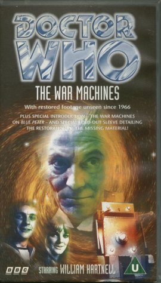
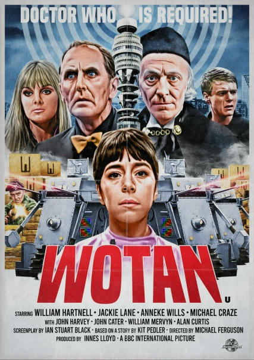

Эра Первого Доктора (3 сезон)
<<< НАЗАД ||| 10. Военные машины ||| ДАЛЬШЕ >>>
Субтитры: Русские и Английские |  |
|---|
25 июня - 16 июля 1966
4 эпизода по 25 мин.
| Изначально все эпизоды утеряны * 2-й эпизод найден в 1978 году - 16mm t/r * Остальные эпизоды найдены в 1984 году - 16mm t/r |
|---|
 |  |
«Военные машины» переносят Доктора и Додо в Лондон 1966 года, где суперкомпьютер ВОТАН планирует захватить мир с помощью подконтрольных ему боевых машин. Доктор раскрывает гипнотический контроль ВОТАНа над людьми и, объединившись с новыми союзниками — Беном и Полли, — находит способ обезвредить угрозу. Серия показывает опасность слепой веры в технологии и знаменует смену спутников: Бен и Полли присоединяются к Доктору, а Додо завершает своё путешествие.
 VHS - июнь 1997 |  DVD - 25 августа 2008 * Версия в нашей группе |
|---|


